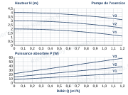

Niveau 1, guidé
Objet : pompe, volume d’eau, vase, remplissage et soupape de la maison.
Données : régime 45/40 °C ; point demandé et tubes : H3 ; radiateurs : H2 ; tables et règles : écrans de la méthode.
Point demandé (H3) : Q = 0,68 m³/h ; H = 2,24 m ; K = H ÷ Q² = …………
| Q (m³/h) | 0,20 | 0,40 | 0,60 | 0,68 | 0,80 | 0,90 |
| H = K × Q² (m) | 2,24 |

| Vitesse retenue | Q au point (m³/h) | H au point (m) | P absorbée (W) |
|---|---|---|---|
V (L) = S (mm²) × longueur aller-retour (m) ÷ 1 000. Longueurs en gras : H3 (tubes), H2 (radiateurs). Arrondis : K au centième ; volumes au centième de litre ; pressions au centième de bar.
| Partie de l’installation | S (mm²) | Longueur (m) | Volume (L) |
|---|---|---|---|
| Tubes 12 × 1 (tronçons 4, 5, 6, 7, 8, 11, 12) | 78,5 | 76,0 | |
| Tubes 14 × 1 (tronçons 9, 10) | 113,1 | 30,0 | |
| Tubes 16 × 1 (tronçons 3) | 153,9 | 14,0 | |
| Tubes 18 × 1 (tronçons 2) | 201,1 | 6,0 | |
| Tubes 22 × 1 (tronçons 1) | 314,2 | 3,0 | |
| Radiateurs, 5,0 L par mètre | 7,00 | ||
| Pompe à chaleur | 5,0 | ||
| Total de l’installation |
| Dilatation e à 45 °C (table de la station) | % | |
| Volume de dilatation Ve = e × total ÷ 100 | L | |
| Hauteur statique Hs = 2,70 + 0,75 − 0,30 | m | |
| Gonflage Pg = Hs ÷ 10, par pas de 0,5 bar | bar | |
| Volume minimal Vn = Ve × (3 + 1) ÷ (3 − Pg) | L | |
| Vase choisi dans la série | L |
| Remplissage = Hs ÷ 10 + 0,5 | bar | |
| Contrôle : remplissage + 2 (≤ 3 ?) | bar | |
| Tarage de la soupape retenu | bar |
Cases en trait double : à reporter à l’écran Vérifier.